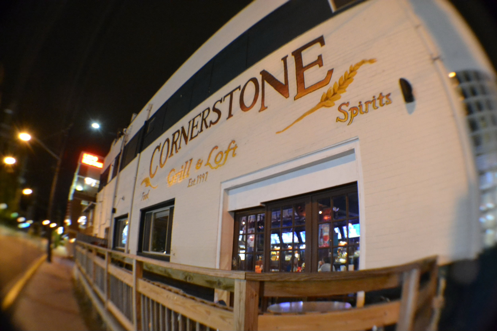

The Changing Face of Route One

Photo courtesy of Cornerstone Bar
Dec. 1, 2022
By Ashley Ankapong, Ava Thompson, Dylan Manfre, Isaiah Hayes, Abbi Ross
Gerald Baldy is a local man who has been living in College Park for 35 years. A stock broker and a part time news reporter, he enjoys seeing the area he grew up in flourish.
“I’ll do anything to help my city,” he said.
However, Baldy may be unable to help his city stay on top. He has been stuck in Route One traffic for five days. The construction on the street has held up more than 100 cars back. Baldy says he has noticed an increase in traffic over the years, but he has never seen it get this bad until now.
“It’s ridiculous,” said Baldy, “I had to buy toothpaste and a toothbrush from Target to adapt because I have been stuck for so long.”
“I mean, what else are we supposed to do?” said Mike Mikey, the owner of Turf. “We need the money to sustain our business, so we have to keep the drunk idiots coming. Crime has also spiked on Route One overtime. Acts such as arson have spiked to 500 incidents this year.
“I think it’s because the football team keeps on losing to Penn State,” said Fire Chief DJ Musty. “Either way it’s annoying because we keep on getting so many calls.”
Route one, a.k.a Baltimore Avenue is a road that starts in the District, cuts through Prince George’s County and Howard County and ends in Downtown Baltimore.
However, construction also increases the wait time for traffic. There are more construction projects today compared to 1987 due to the rapid development. The city is building new grocery stores; like Trader Joe’s, bars, and apartment complexes. These construction projects flow into the street causing impassable traffic.
Even though the cars don’t move, people still do. The construction caused College Park to be a walkable college town. The bar scene is now bustling even though the legal drinking age is now 21 instead of 18.
Also more and more student housing has been built near Route One. However, students can’t get to class because they can’t get through the traffic so they all fail their classes.
“I told my professor that it was difficult to get to class because of the construction and traffic,” said Samantha Puddy. “All she said was poopoo peepee.”
The city of College Park has promised to mitigate this problem by making the roads wider. The only issue according to one official is that it will increase construction, creating even more traffic, and more problems.
In the midst of all the changes Baldy says that he has sucked it up.
“I’ve attempted to cope with all of this by listening to Yeat in the car.'' said Baldy, “I just hope I can finally move my car someday to go to work.”